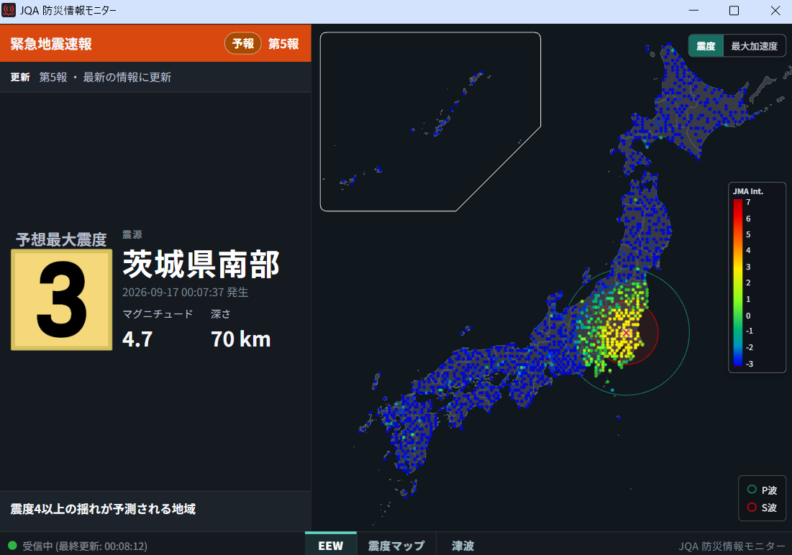
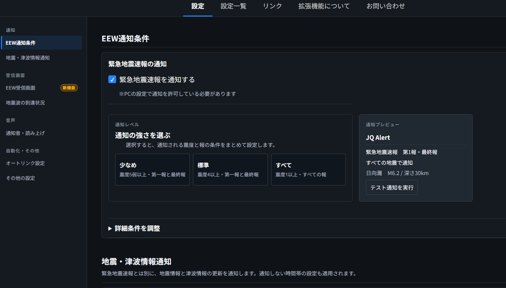
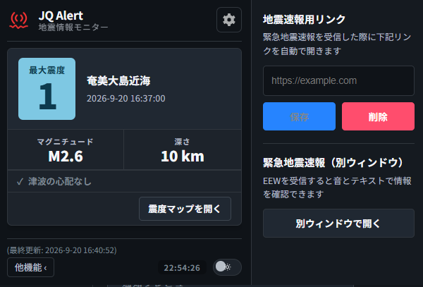

01
EARTHQUAKE EARLY WARNING
緊急地震速報をすばやく確認
気象庁の発表に基づく緊急地震速報を通知。震度や到達までの時間など、身を守るために役立つ情報を確認できます。
Chrome Extension
JQ Alertは、緊急地震速報と地震情報をブラウザで確認できるChrome拡張機能です。大切な情報を、必要なときにすばやく確認できます。
Google Chrome および Chromium ベースのブラウザで利用できます。

最新の情報が届いています
Features
JQ Alertは、日本で暮らす皆さまのために、緊急地震速報を確認するための3つの機能を用意しています。
EARTHQUAKE EARLY WARNING
気象庁の発表に基づく緊急地震速報を通知。震度や到達までの時間など、身を守るために役立つ情報を確認できます。
YOUR SETTINGS
通知する震度や対象地域、音量などを設定できます。必要な情報だけを、普段のブラウジング中にも受け取れます。

QUICK CHECK
ツールバーのアイコンをクリックするだけで、最新の地震情報をチェック。震源地と震度をひと目で確認できます。

Ready when it matters
インストールは無料。数分の設定で、地震情報を受け取れます。